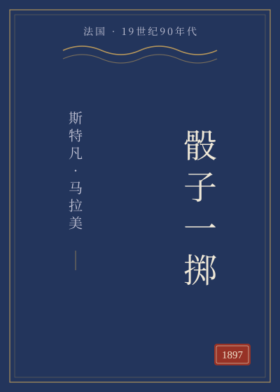
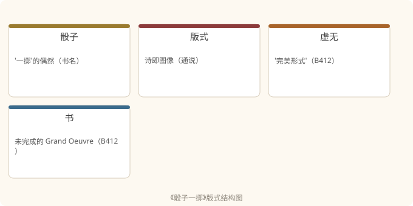

骰子一掷
一、基本信息
| 作者 | 斯特凡·马拉美 |
|---|---|
| 成书/出版 | 1897年（Britannica B412：Un Coup de dés jamais n'abolira le hasard (1897)） Stephane Mallarme — Encyclopaedia Britannica（百科全书） |
| 国别/地区 | 法国 |
| 时代 | 近代 · 19世纪90年代 |
| 体裁 | 长诗（视觉诗） |
| 语言 | 法语 |

《骰子一掷》版式结构图（主题·结构图）
二、创作背景
Britannica（B412）：Un Coup de dés jamais n'abolira le hasard（骰子一掷永不取消偶然）——1897年。
Britannica（B412）：马拉美——'虚无中的完美形式'——诗人'a veritable God, creating something from nothing'；Grand Oeuvre / Le Livre——从未完成。
题材（通说待核）：版式'排布'的诗——'骰子一掷'与'偶然'的海。
三、内容脉络
（通说待核——B412未载诗节）'骰子一掷永不取消偶然'的版式实验。
（通说待核）'船'与'深渊'的意象。
四、主要人物表
| 人物 | 身份 | 说明 |
|---|---|---|
| 版式之'我' | 实验诗人 | （B412 语境） |
五、主题与艺术特点
- '偶然'与'必然'（书名语境——通说待核）。
- 版式：诗即图像（先于 Calligrammes 的实验——通说待核）。
- '书'的未完成（B412：Grand Oeuvre / Le Livre）。
六、影响与评论
- Britannica：Un Coup de dés (1897)（B412）。
Stephane Mallarme — Encyclopaedia Britannica（百科全书） - Britannica：'Grand Oeuvre / Le Livre never completed'（B412）。
Stephane Mallarme — Encyclopaedia Britannica（百科全书）
七、阅读建议
难点
- 版式的读法（页面的'空白'）。
- '偶然'的哲学。
- 《骰子一掷》中译名（《骰子一掷永远取消不了偶然》）待核。
- 法文原版（公有领域状态待核）。
马拉美收官之作；与《牧神午后》对读。
八、待核实
- 版式细节核对（双页跨页说——通说）。
- 1897年发表（Cosmopolis说）待核。
- '船'意象细节待核。
本页主要来源
斯特凡·马拉美的其他收录作品：骰子一掷